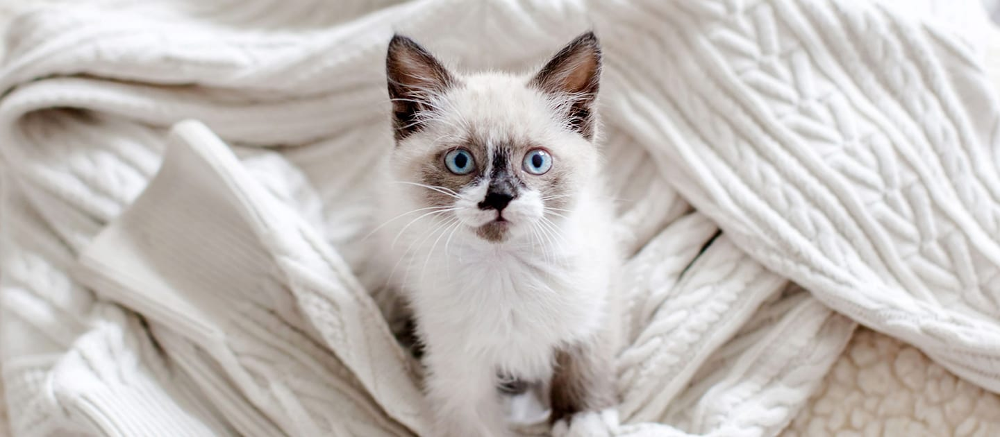
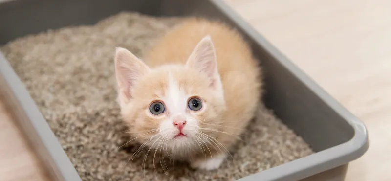
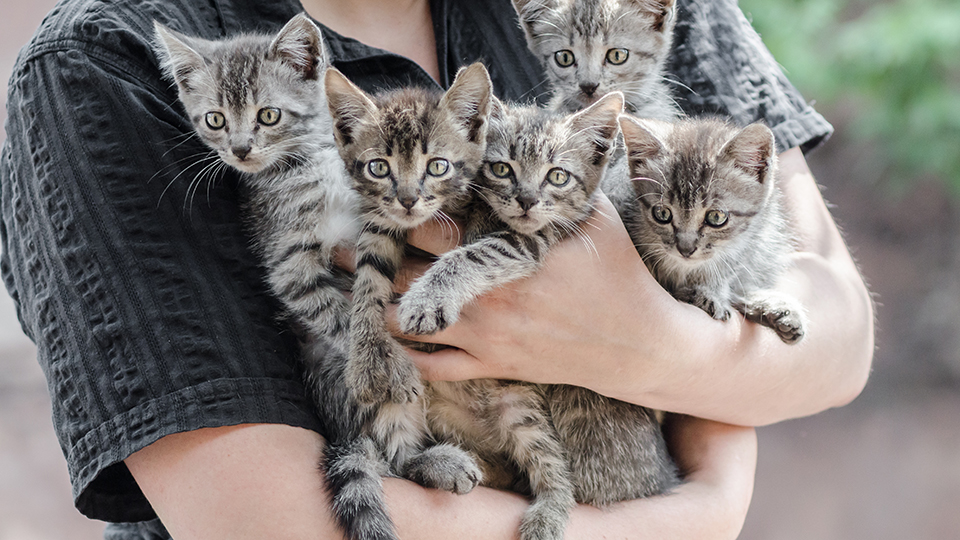
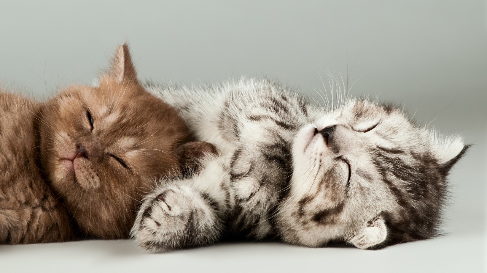
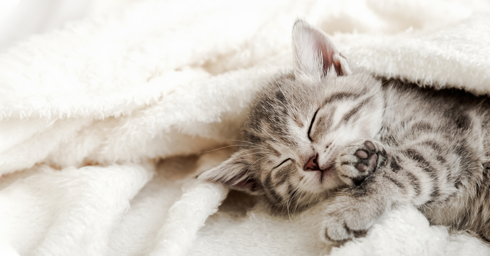

О котенке

Когда и почему у котят меняется цвет глаз?
У всех новорожденных котят цвет глаз голубой, но со временем он меняется. В каком возрасте..

Как приучить котенка к лотку
Один из первых вопросов, который встает перед новоиспеченным владельцем – как приучить..

Этапы развития котят
Развитие котят во многом зависит не только от мамы-кошки, но и от владельца. На каждом этапе..
4 любопытных факта о котятах
Котята невероятно милые и беззащитные. В первые месяцы жизни им требуется особый уход и внимание со..

Когда котята открывают глаза после рождения
У домашней кошки появились котята? Заботиться о здоровье потомства придется не только новоиспеченной...
